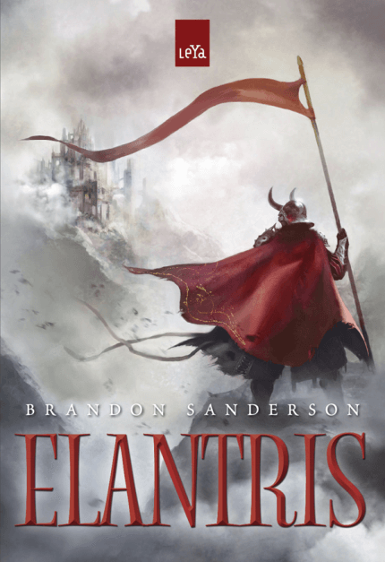
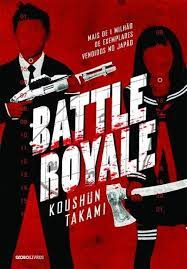
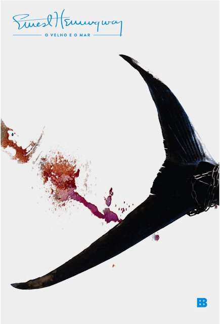
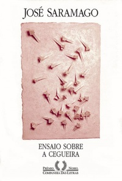

Últimas Resenhas
-favicon estrelas
-ações
Elantris

Sinopse: Elantris era a capital de Arelon: colossal, linda, radiante e repleta de seres benevolentes que usavam suas poderosas habilidades mágicas em benefício de todos. Mas, há dez anos, uma maldição misteriosa devastou Elantris e os corpos de seus habitantes – que agora vivem a decrepitude em intensa dor. Uma grande história de fantasia, mistério, romance, humor, disputa religiosa e conflitos políticos que demonstra por que Brandon Sanderson tem sido considerado, inclusive pelo mestre George R.R. Martin, um dos grandes autores de fantasia épica da atualidade.
-favicon estrelas
-ações
Battle Royale

Sinopse: Battle Royale é um thriller de alta octanagem sobre violência juvenil em um mundo distópico, além de ser um dos best-sellers japoneses e mais polêmico entre os romances. Como parte de um programa implacável pelo governo totalitário, os alunos do nono ano são levados para uma pequena ilha isolada e recebem um mapa, comida e várias armas. Forçados a usarem coleiras especiais, que explodem quando eles quebram uma regra, eles devem lutar entre si por três dias até que apenas um "vencedor" sobreviva. O jogo de eliminação se torna a principal atração televisiva de reality shows. Esse clássico japonês é uma alegoria potente do que significa ser jovem e sobreviver no mundo de hoje. O primeiro romance do jornalista Koushun Takami, tornou-se um filme ainda mais notório pelo diretor de 70 anos de idade, Kinji Fukusaku.
-favicon estrelas
-ações
Dois Irmãos

Sinopse: "Dois Irmãos" é a história de como se constroem as relações de identidade e diferença numa família em crise. É a história de dois irmãos gêmeos - Yaqub e Omar - e suas relações com a mãe, o pai e a irmã. Moram na mesma casa Domingas, empregada da família, e seu filho. Esse menino - o filho da empregada - narra, trinta anos depois, os dramas que testemunhou calado. Buscando a identidade de seu pai entre os homens da casa, ele tenta reconstruir os cacos do passado, ora como testemunha, ora como quem ouviu e guardou, mudo, as histórias dos outros. Do seu canto, ele vê personagens que se entregam ao incesto, à vingança, à paixão desmesurada. O lugar da família se estende ao espaço de Manaus, o porto à margem do rio Negro: a cidade e o rio, metáforas das ruínas e da passagem do tempo, acompanham o andamento do drama familiar. Prêmio Jabuti 2001 de Melhor Romance.
-favicon estrelas
-ações
O Velho e o Mar

Sinopse:Essa é a história de um homem que convive com a solidão do alto-mar, com seus sonhos e pensamentos, sua luta pela sobrevivência e sua inabalável confiança na vida. Esse é o fio do enredo - fio tenso como o que prende na ponta da linha o grande peixe que acaba de ser pescado - com o qual Hemingway arma uma das mais belas obras da literatura contemporânea.
Há 84 dias que Santiago, um velho pescador, não apanhava um único peixe. Por isso já diziam se tratar de um salao, ou seja, um azarento da pior espécie. Mas Santiago possui têmpera de aço, acredita em si mesmo, e parte sozinho para o mar alto, munido da certeza de que, desta vez, será bem- sucedido no seu trabalho.
-favicon estrelas
-ações
Ensaio Sobre a Cegueira

Uma terrível "treva branca" vai deixando cegos, um a um, os habitantes de uma cidade. Com essa fantasia aterradora, Saramago nos obriga fechar os olhos e ver. Recuperar a lucidez, resgatar o afeto: essas são as tarefas do escritor e de cada leitor, diante da pressão dos tempos e do que se perdeu.
Um motorista parado no sinal se descobre subitamente cego. É o primeiro caso de uma "treva branca" que logo se espalha incontrolavelmente. Resguardados em quarentena, os cegos se perceberão reduzidos à essência humana, numa verdadeira viagem às trevas.
O Ensaio sobre a cegueira é a fantasia de um autor que nos faz lembrar "a responsabilidade de ter olhos quando os outros os perderam". José Saramago nos dá, aqui, uma imagem aterradora e comovente de tempos sombrios, à beira de um novo milênio, impondo-se à companhia dos maiores visionários modernos, como Franz Kafka e Elias Canetti. Cada leitor viverá uma experiência imaginativa única. Num ponto onde se cruzam literatura e sabedoria, José Saramago nos obriga a parar, fechar os olhos e ver. Recuperar a lucidez, resgatar o afeto: essas são as tarefas do escritor e de cada leitor, diante da pressão dos tempos e do que se perdeu: "uma coisa que não tem nome, essa coisa é o que somos".
-favicon estrelas
-ações
A Metamorfose

Sinopse:Quando Gregor Samsa, certa manhã, acordou de sonhos intranquilos, tudo mudou. Não só em sua vida, mas no mundo. Ao se encontrar metamorfoseado em um inseto monstruoso, Gregor acompanha as reações de sua família ao perceberem o estranho ser em que ele se tornou. E, enquanto luta para se manter vivo e entender a sua nova realidade, reflete sobre o comportamento de seus pais, de sua irmã e de seu chefe, e de forma ainda mais angustiante, pensa na própria vida até então.